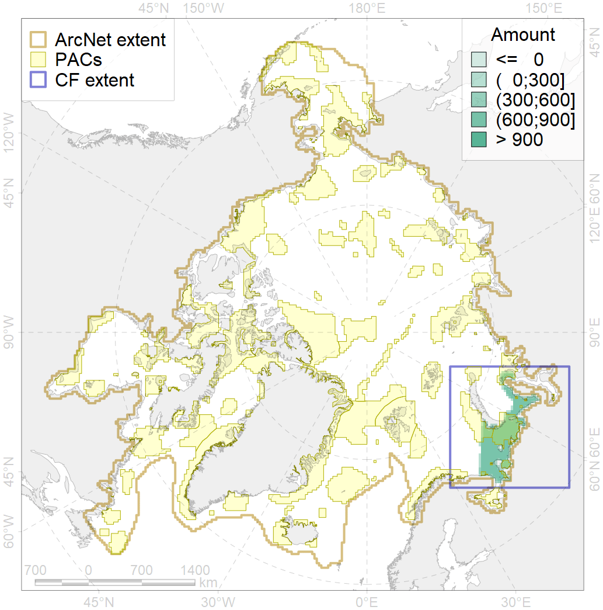
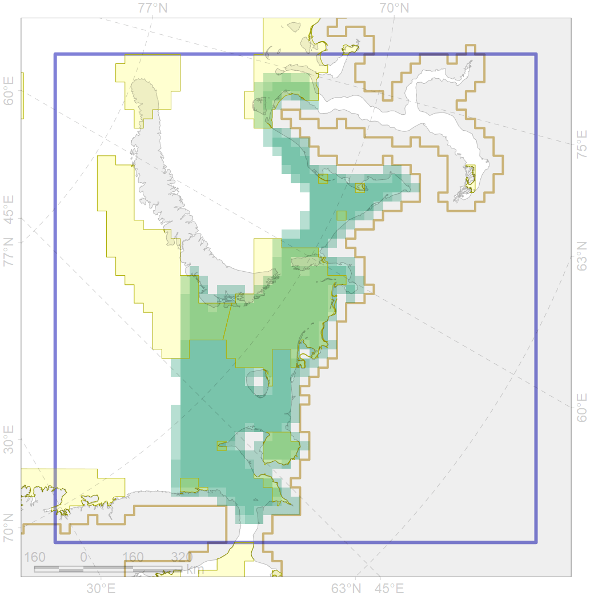

4072

| CF code | 4072 |
| CF name | Range of the Pechora herring (Clupea pallaii suworowi) |
| Time Period | 1950-2010s |
| Source(s) | Whienerhoither et al., 2011; Dorofeeva in Reshetnikov, 2013 |
| Seasonality | Jan-Dec |
| Depth Horizon | 0-200 |
| Methodology | Compiled from literature sources based on field observations |
| Use Restrictions | Open access |
| Author Name | N. Chernova |
| Notes | |
| Scenario’s Target | 0.12 |
| Target Achievement | 0.422 (Scenario: 351.9%) |
| PAC | Share of the Total Amount within the PAC | Share of the Target Achievement for the ArcNet | PAC’s Contribution to the Target Achievement |
|---|---|---|---|
| 16 | 2.8%2.9% | 22.9%24.0% | 6.5%6.8% |
| 18 | 0.7%0.7% | 4.9%5.0% | 1.4%1.4% |
| 20 | 26.2%27.7% | 210.8%222.6% | 59.9%63.3% |
| 21 | 6.2%7.0% | 42.7%49.3% | 12.1%14.0% |
| 23 | 2.6%2.9% | 19.0%21.2% | 5.4%6.0% |
| 24 | 0.6%0.9% | 4.9%6.9% | 1.4%2.0% |
| 25 | 0.8%1.1% | 5.5%7.4% | 1.6%2.1% |
| inner | 39.9%43.2% | 310.7%336.3% | 88.3%95.6% |
| outer | 60.1%71.3% | 41.2%121.3% | 11.7%34.5% |
| † supplement values are for area consistence whereas principal values are for Accenter compatible gridded stats |